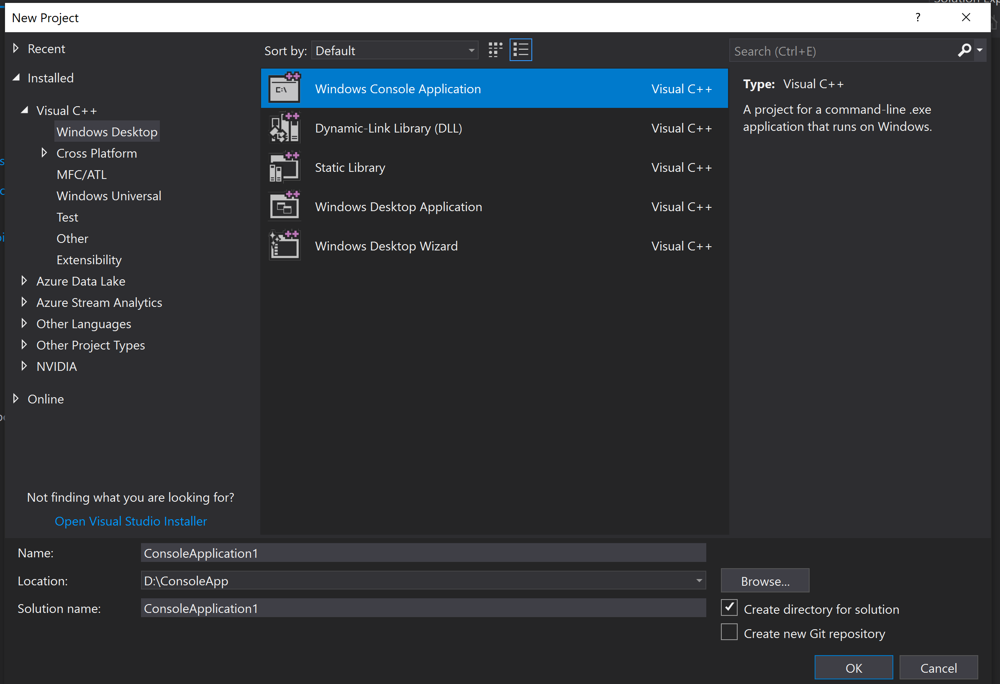
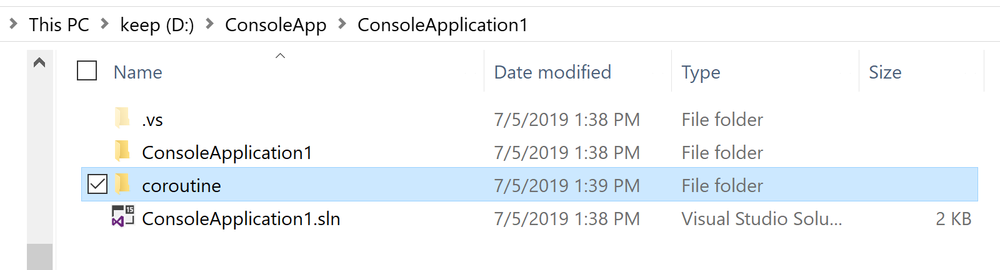
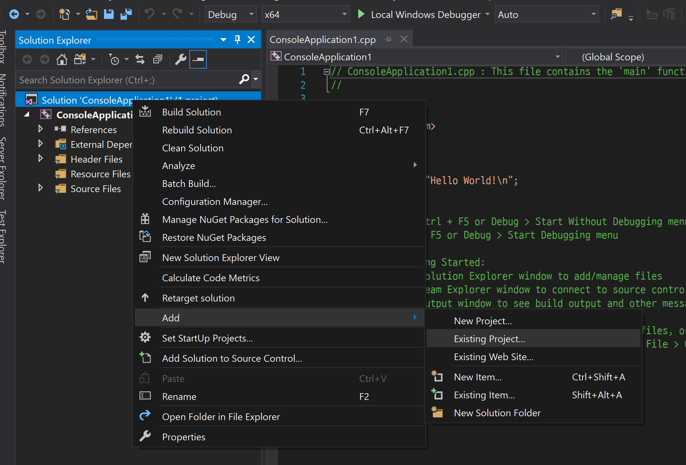
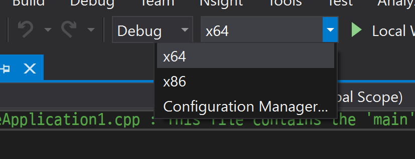
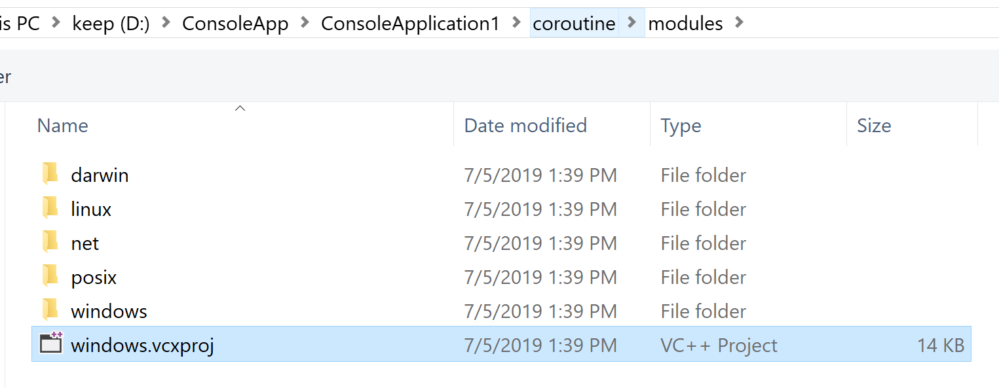
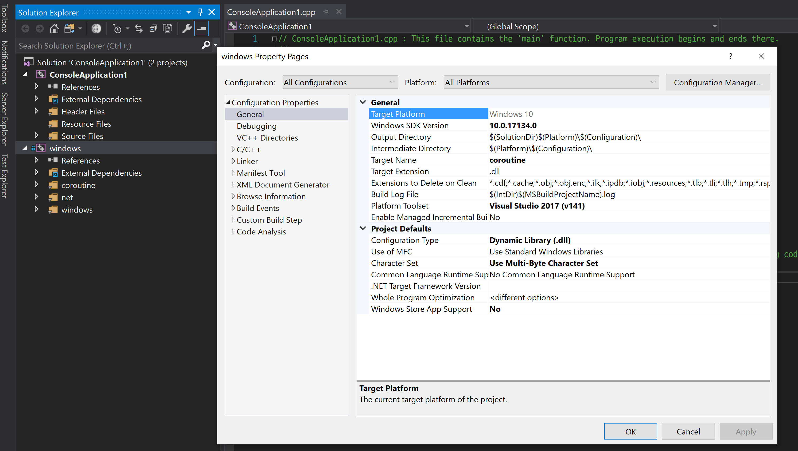
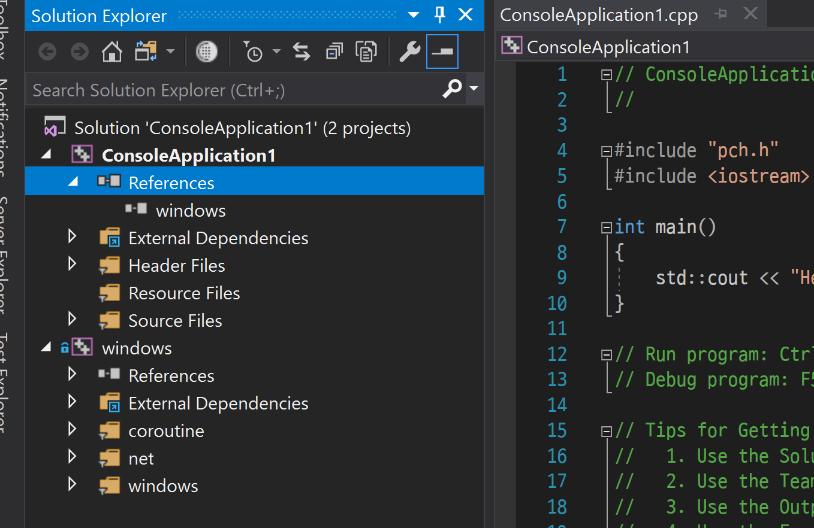
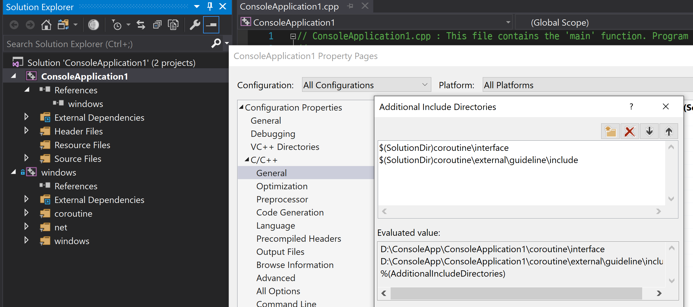
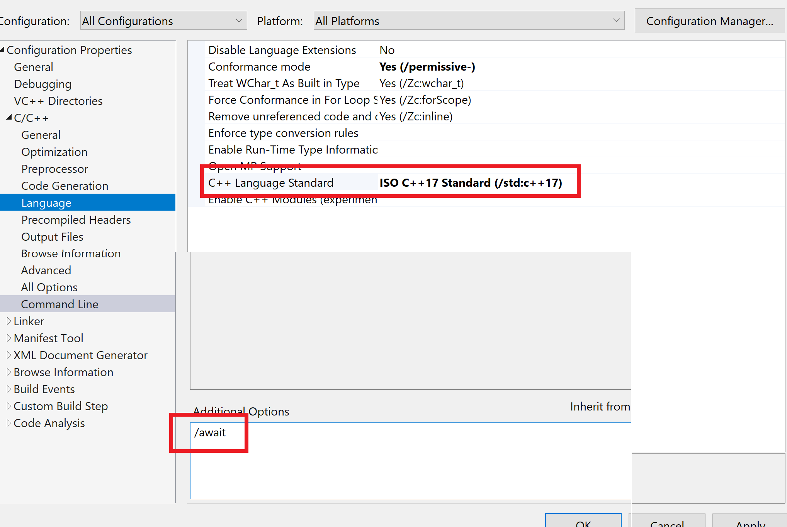
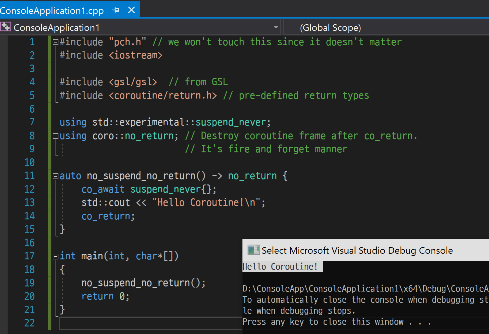

How To Import: Visual Studio
Before Import ...
Check the Windows SDK and Visual Studio
The coroutine.sln file might be accessing with the wrong version. Or the different version of the Visual Studio can bother you.
Try the build first. If the step fails, please create a new issue!
I tested with the following configurations
- Visual Studio 2017 (v141, 15.12+)
- 10.0.14393: AppVeyor
- 10.0.17134
- ...
- Visual Studio 2019 (v142, ...)
- 10.0.17134
- ...
Follow the steps!
Create a new C++ Solution/Project
Of course, the first step is to create importing Project.
Open your Visual Studio and create a new VC++ Solution (or project, whatever).

Then clone the repository. master branch will be ok. Also, you have to fetch submodules.
PS D:\ConsoleApp\ConsoleApplication1> git clone https://github.com/luncliff/coroutine PS D:\ConsoleApp\ConsoleApplication1> cd .\coroutine\ PS D:\ConsoleApp\ConsoleApplication1\coroutine> git submodule update --init --recursive Submodule 'external/guideline' (https://github.com/Microsoft/GSL) registered for path 'external/guideline' Submodule 'external/ios-cmake' (https://github.com/leetal/ios-cmake) registered for path 'external/ios-cmake' Cloning into 'D:/ConsoleApp/ConsoleApplication1/coroutine/external/guideline'... Cloning into 'D:/ConsoleApp/ConsoleApplication1/coroutine/external/ios-cmake'... Submodule path 'external/guideline': checked out 'b74b286d5e333561b0f1ef1abd18de2606624455' Submodule path 'external/ios-cmake': checked out 'a177e3cafe05f0571218f3eeb39067aae7e5255a'
After the clone, the folder should be like the following.

Let's open the VS and keep going. :)
Import VC++ Project
We're going to add this library's windows project to the solution.

Oh, never forget the x64 platform config!
This library doesn't target x86. The arch is supported by MSVC, but it's not in the maintenance plan for now.

Add Existing Project
If you cloned the library like the above, you can find it after browsing the workspace.

After import, open the Properties page and check the configruation.
Change the 'Windows SDK Version' to installed one that you are going to use. It matters.

Add Reference
Now, change the reference of the ConsoleApplication1 project.

Adjustment for the modules/windows.vcxproj
Include Directories
With basic include directories of the VC++ project, there are 3 additional paths.
$(ProjectDir)..\interface: include folder for library interfaces$(ProjectDir)..\external\guideline\include: C++ Core Guideline Support Library.<gsl/gsl>$(ProjectDir): internal codes
So we have to inherit 2 paths in our new project(ConsoleApplication1).

After changing the 'Additional Include Directories', update the code like the follwing.
#include "pch.h" // we won't touch this since it doesn't matter #include <iostream> #include <gsl/gsl> // from GSL #include <coroutine/return.h> // pre-defined return types int main(int, char*[]) { std::cout << "Hello Coroutine!\n"; return 0; }
Now, try the build. (I will do that with x64|Debug).
The build must fail because we didn't changed compiler option.
MSVC Compier Options
To build the C++ 20 Coroutine code, we have to set the option /await.
Also, the language standard C++ 17 is required(/std:c++17 or /std:c++latest).
In case of the coroutine's project, the option is just like this.
<Project DefaultTargets="Build" ToolsVersion="15.0" xmlns="http://schemas.microsoft.com/developer/msbuild/2003"> <!-- ... --> <ItemDefinitionGroup Condition="'$(Configuration)|$(Platform)'=='Debug|x64'"> <!-- ... --> <AdditionalOptions>/await %(AdditionalOptions)</AdditionalOptions> <LanguageStandard>stdcpplatest</LanguageStandard> <!-- ... -->
Therefore the property of our ConsoleApplication1 need to be changed like the image.

Linker Options
Well, you don't have to care! :)
Just try the new build. If something goes wrong, create a new issue with your screenshot and reproduction steps so I can help you.
Try this example
So this is our new code.
The function doesn't suspend and returns nothing. It works just like normal void(void) subroutine, but it's enough to confirm our compiler supports the feature.
#include "pch.h" // we won't touch this since it doesn't matter #include <iostream> #include <gsl/gsl> // from GSL #include <coroutine/return.h> // pre-defined return types using std::experimental::suspend_never; using coro::no_return; // Destroy coroutine frame after co_return. // It's fire and forget manner auto no_suspend_no_return() -> no_return { co_await suspend_never{}; std::cout << "Hello Coroutine!\n"; co_return; } int main(int, char*[]) { no_suspend_no_return(); return 0; }
Glad for a new C++ Coroutine user! The screen shot is here.

Questions & Trouble Shooting
This section is reserved to answer the question,
"If the add reference doesn't work, what should user try?"
Build with the Clang-cl ?
Wow, really? You must install the LLVM packages first.
Follow this document.
I'm considering VS 2019's CMake integration for Clang-cl build tutorial.
I will add a new document ASAP.